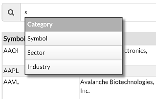
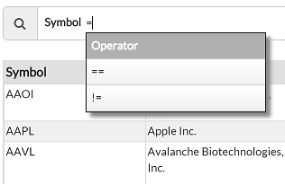
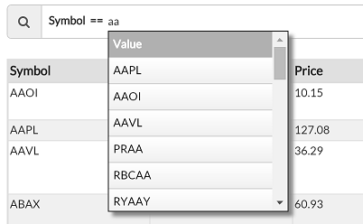
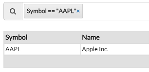
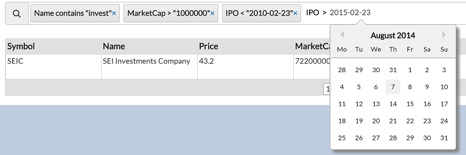

react-structured-filter
react-structured-filter is a javascript library that provides autocomplete faceted search queries. This was inspired by visualsearch and structured-filter but redone for React.
It is heavily based on react-typeahead and uses some modified code from react-datepicker. It was developed to be used with Griddle, but should be usable with fixed-data-table.
It is used by Summit Route internally for analyzing our data. We needed an interface to provide advanced querying capabilities. Be aware that this might be confusing to your users and queries can be constructed that may not be performant on your dataset.
Demo
Click here for Demo
The demo provided uses static data sent down to the client. You should poll data from a server and do filtering on a real database.Capabilities
This library creates facets built from 3 auto-completed entries, which are a Category, Operator, and Value.Selecting a Category
Selecting an Operator
Selecting a Value
Facet result
Multiple facets
Filtering can work on different data types, whether it's a value with choices (textoptions), an arbitrary text value, a number, or a date. Filter data
Once a facet is complete, the filter string is updated. An example filter string is:
[
{"category":"Name","operator":"contains","value":"invest"},
{"category":"MarketCap","operator":">","value":"1000000"},
{"category":"IPO","operator":"<","value":"2010-02-23"}
]
Usage
- To use, construct a component with a StructuredFilter and a GriddleWithCallback.
- You'll need to write a getJsonData function for the GriddleWithCallback, and you'll need to do a lot of server-side work to handle the filter string.
- You'll create an updateFilter function which simply updates the states, which results in the GriddleWithCallback updating it's filter by calling getJsonData.
- Then in the StructuredFilter, pass onTokenAdd={this.updateFilter} onTokenRemove={this.updateFilter} and pass it a set of options, for example:
options={[ {category:"Symbol", type:"textoptions", options:this.getSymbolOptions}, {category:"Name",type:"text"}, {category:"Price",type:"number"}, {category:"IPO", type:"date"}, ]}
Options
The options property passed to StructuredFilter must be an array of structures with the components category and type.- category: Name of the first thing the user types.
- type: This can be one of the following:
- text: Arbitrary text for the value. No autocomplete options.
- Operator choices will be: "==", "!=", "contains", "!contains".
- textoptions: You must additionally pass an options value which will be a function that returns the list of options choices as an array
(for example function getOptions() {return ["MSFT", "AAPL", "GOOG"]}).
- Operator choices will be: "==", "!=".
- number: Arbitrary text for the value. No autocomplete options.
- Operator choices will be: "==", "!=", "<", "<=", ">", ">=".
- date: Shows a calendar and the input must be of the form "YYYY-MM-DD".
- Operator choices will be: "==", "!=", "<", "<=", ">", ">=".
- text: Arbitrary text for the value. No autocomplete options.